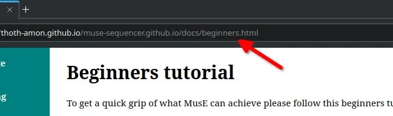
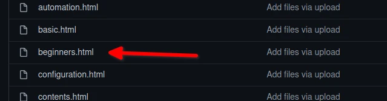
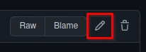
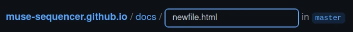

Editing this wiki
Creating a Fork
This wiki is hosted on github.com You will need to create account on there to create any edits. Once you are logged in, you will find the website github page at https://github.com/muse-sequencer/muse-sequencer.github.io To edit this, you will need to create a fork. A fork will create a version of the website, which you can edit and then submit "pull requests" which are requests to the owner of the original site to submit your changes.
To create the fork, click the fork button on the top left of the website's githubpage. This will create your fork at https://github.com/YOUR USERNAME/muses-sequencer.github.io
Editing existing pages
Now you are at your fork, you will notice a list of folders and files. The wiki is contained in the docs files, which you will need to navigate to. Here will be the list of all the pages in the wiki. You can find the filename of the page you wish to edit by comparing the url in your browser to the list of files on github


Clicking the on the file name on github will take you to a page where you can see the html code of the file. To edit the file you need to click the pencil icon on the page, which will take you to an editing page

When using this screen, you may want to change the "wrap" settings by changing the "No wrap" drop button to "soft wrap". This will remove the need to scroll the window to see code to the right.
If you are new to html, all items in HTML are surrouned with tags, which tell the browser how to render them. For instance paragraphs have <p></p> either side to denote a paragaph. The / is used on the later tag to denote the end. The <h1> is used for the main title of the page. <h2> for the sub headings. <img src="man/imagename.png"></img> is used for images. Use image tags inside of <p> tags. <a href ="url">Url Text</a> is used for links
Do not edit anything before the <div id="main"> and do not delete any of the div tags as this can cause the layout of the webpage to break.
Once you are finished editing, hit the commit button at the bottom of the page to confirm your edit
Creating a new page
In the templates directory, there is a file called template.html. Click this and copy the contents of the file. Return to the docs directory. Click the add file drop down button and then "Create new file". Paste the template.html contents into this, name your file in the bar at the top and the new file is ready to be edited. As with editing, click commit when you are done
Submitting your edits
Once your edits are complete, all this is needed to be done is to submit them with a pull request. On your github fork main page go the pull requests tab and click the "New Pull Request" button. This will prompt you to create a thread in the main github page's pull request tab. Detail your edits and then click the "Create Pull Request" button"